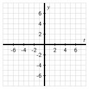

¿Cómo se define el logaritmo en base \(10\text{?}\)
¿Qué es el “logaritmo natural” y en qué se diferencia del logaritmo en base \(10\text{?}\)
¿Cómo podemos resolver una ecuación que involucra \(e\) a alguna cantidad desconocida?
En Sección 1.7, introdujimos la idea de una función inversa. La idea fundamental es que \(f\) tiene una función inversa si y solo si existe otra función \(g\) tal que \(f\) y \(g\) “deshacen” los respectivos procesos del otro. En otras palabras, el proceso de la función \(f\) es reversible, y al revertir \(f\) se genera una función relacionada \(g\text{.}\)
Más formalmente, recuerda que una función \(y = f(x)\) (donde \(f : A \to B\)) tiene una función inversa si y solo si existe otra función \(g : B \to A\) tal que \(g(f(x)) = x\) para cada \(x\) en \(A\text{,}\) y \(f(g(y)) = y\) para cada \(y\) en \(B\text{.}\) Sabemos que dada una función \(f\text{,}\) podemos usar el Prueba de la Línea Horizontal para determinar si \(f\) tiene una función inversa o no. Finalmente, siempre que una función \(f\) tiene una función inversa, llamamos a su función inversa \(f^{-1}\) y sabemos que las dos ecuaciones \(y = f(x)\) y \(x = f^{-1}(y)\) dicen lo mismo desde diferentes perspectivas.
Preview Activity3.4.1.
Sea \(P(t)\) la función de “potencias de 10”, que se da por \(P(t) = 10^t\text{.}\)
Completa la Tabla 3.4.1 para generar ciertos valores de \(P\text{.}\)
Table3.4.1.Valores elegidos de la función de potencias de \(10\text{.}\)
\(t\)
-3
-2
-1
0
1
2
3
\(y = P(t) = 10^t\)
¿Por qué \(P\) tiene una función inversa?
Ya que \(P\) tiene una función inversa, sabemos que existe alguna otra función, digamos \(L\text{,}\) tal que escribir “\(y = P(t)\)” dice exactamente lo mismo que escribir “\(t = L(y)\)”. En palabras, donde \(P\) produce el resultado de elevar \(10\) a una potencia dada, la función \(L\) revierte este proceso y en su lugar nos dice la potencia a la que necesitamos elevar \(10\text{,}\) dado un resultado deseado. Completa la Tabla 3.4.2 para generar una colección de valores de \(L\text{.}\)
Table3.4.2.Valores elegidos de la función \(L\) que es la inversa de \(P\text{.}\)
\(y\)
\(10^{-3}\)
\(10^{-2}\)
\(10^{-1}\)
\(10^{0}\)
\(10^{1}\)
\(10^{2}\)
\(10^{3}\)
\(L(y)\)
¿Cuáles son el dominio y el rango de la función \(P\text{?}\) ¿Cuáles son el dominio y el rango de la función \(L\text{?}\)
Subsection3.4.1El logaritmo en base \(10\)
La función de potencias de \(10\)\(P(t) = 10^t\) es una función exponencial con base \(b \gt 1\text{.}\) Como tal, \(P\) siempre está aumentando, y por lo tanto su gráfica pasa la Prueba de la Línea Horizontal, así que \(P\) tiene una función inversa. Por lo tanto, sabemos que existe alguna otra función, \(L\text{,}\) tal que escribir \(y = P(t)\) es equivalente a escribir \(t = L(y)\text{.}\) Por ejemplo, sabemos que \(P(2)=100\) y \(P(-3)=\frac{1}{1000}\text{,}\) así que es equivalente decir que \(L(100) = 2\) y \(L(\frac{1}{1000}) = -3\text{.}\) A esta nueva función \(L\) la llamamos el logaritmo en base \(10\), que se define formalmente de la siguiente manera.
Definition3.4.3.
Dado un número real positivo \(y\text{,}\) el logaritmo en base \(10\) de \(y\) es la potencia a la que elevamos \(10\) para obtener \(y\text{.}\) Usamos la notación “\(\log_{10}(y)\)” para denotar el logaritmo en base \(10\) de \(y\text{.}\)
El logaritmo en base \(10\) es por lo tanto la inversa de la función de potencias de \(10\text{.}\) Mientras que \(P(t) = 10^t\) toma un valor de entrada que es un exponente y produce el resultado de elevar \(10\) a esa potencia, el logaritmo en base \(10\) toma un número de entrada que vemos como una potencia de \(10\) y produce el exponente correspondiente tal que \(10\) elevado a ese exponente es el número de entrada.
En la notación de logaritmos, ahora podemos actualizar nuestras observaciones anteriores con las funciones \(P\) y \(L\) y ver cómo las ecuaciones exponenciales se pueden escribir de dos maneras equivalentes. Por ejemplo,
dicen lo mismo desde dos perspectivas diferentes. La primera dice “\(100\) es \(10\) elevado a la potencia \(2\)”, mientras que la segunda dice “\(2\) es la potencia a la que elevamos \(10\) para obtener \(100\)”. De manera similar,
Si reorganizamos las afirmaciones de los hechos en Ecuación (3.4.1), podemos ver otra relación importante entre las potencias de \(10\) y la función logaritmo en base \(10\text{.}\) Notando que \(\log_{10}(100) = 2\) y \(100 = 10^2\) son afirmaciones equivalentes, y sustituyendo la última ecuación en la primera, vemos que
En palabras, Ecuación (3.4.3) dice que “la potencia a la que elevamos \(10\) para obtener \(10^2\text{,}\) es \(2\)”. Es decir, la función logaritmo en base \(10\) deshace el trabajo de la función de potencias de \(10\text{.}\)
De manera similar, si reorganizamos las afirmaciones en Ecuación (3.4.2), podemos observar que al reemplazar \(-3\) con \(\log_{10}(\frac{1}{1000})\) tenemos
En palabras, Ecuación (3.4.4) dice que “cuando \(10\) se eleva a la potencia a la que elevamos \(10\) para obtener \(\frac{1}{1000}\text{,}\) obtenemos \(\frac{1}{1000}\)”.
Resumimos las relaciones clave entre la función de potencias de \(10\) y su inversa, la función logaritmo en base \(10\text{,}\) de manera más general de la siguiente manera.
\(P(t) = 10^t\) y \(L(y) = \log_{10}(y)\).
El dominio de \(P\) es el conjunto de todos los números reales y el rango de \(P\) es el conjunto de todos los números reales positivos.
El dominio de \(L\) es el conjunto de todos los números reales positivos y el rango de \(L\) es el conjunto de todos los números reales.
Para cualquier número real \(t\text{,}\)\(\log_{10}(10^t) = t\text{.}\) Es decir, \(L(P(t)) = t\text{.}\)
Para cualquier número real positivo \(y\text{,}\)\(10^{\log_{10}(y)} = y\text{.}\) Es decir, \(P(L(y)) = y\text{.}\)
\(10^0 = 1\) y \(\log_{10}(1) = 0\text{.}\)
La función logaritmo en base \(10\) es como la función seno o coseno en este sentido: para ciertos valores especiales, es fácil conocer el valor de la función logaritmo. Mientras que para seno y coseno los puntos familiares provienen de puntos especialmente colocados en el círculo unitario, para la función logaritmo en base \(10\text{,}\) los puntos familiares provienen de potencias de \(10\text{.}\) Además, al igual que seno y coseno, para todos los demás valores de entrada, (a) el cálculo finalmente determina el valor de la función logaritmo en base \(10\) en otros valores, y (b) usamos tecnología computacional para calcular estos valores. Para la mayoría de los dispositivos computacionales, el comando log(y) produce el resultado del logaritmo en base \(10\) de \(y\text{.}\)
Es importante notar que la función logaritmo produce valores exactos. Por ejemplo, si queremos resolver la ecuación \(10^t = 5\text{,}\) entonces se sigue que \(t = \log_{10}(5)\) es la solución exacta de la ecuación. Al igual que \(\sqrt{2}\) o \(\cos(1)\text{,}\)\(\log_{10}(5)\) es un número que es un valor exacto. Un dispositivo computacional puede darnos una aproximación decimal, y normalmente queremos distinguir entre el valor exacto y el aproximado. Para los tres números diferentes aquí, \(\sqrt{2} \approx 1.414\text{,}\)\(\cos(1) \approx 0.540\text{,}\) y \(\log_{10}(5) \approx 0.699\text{.}\)
Activity3.4.2.
Para cada una de las siguientes ecuaciones, determina el valor exacto de la variable desconocida. Si el valor exacto involucra un logaritmo, usa un dispositivo computacional para también reportar un valor aproximado. Por ejemplo, si el valor exacto es \(y = \log_{10}(2)\text{,}\) también puedes notar que \(y \approx 0.301\text{.}\)
\(\displaystyle 10^t = 0.00001\)
\(\displaystyle \log_{10}(1000000) = t\)
\(\displaystyle 10^t = 37\)
\(\displaystyle \log_{10}(y) = 1.375\)
\(\displaystyle 10^t = 0.04\)
\(\displaystyle 3 \cdot 10^t + 11 = 147\)
\(\displaystyle 2\log_{10}(y) + 5 = 1\)
Subsection3.4.2El logaritmo natural
El logaritmo de base-\(10\) es un buen punto de partida para entender cómo funcionan las funciones logarítmicas porque las potencias de \(10\) son fáciles de calcular mentalmente. Podríamos considerar de manera similar las potencias de \(2\) o las potencias de \(3\) y desarrollar un logaritmo correspondiente de base \(2\) o \(3\text{.}\) Pero en lugar de tener una colección completa de diferentes funciones logarítmicas, de la misma manera que ahora usamos la función \(e^t\) y la escala apropiada para representar cualquier función exponencial, desarrollamos una única función logarítmica que podemos usar para representar cualquier otra función logarítmica a través de la escala. En correspondencia con la función exponencial natural, \(e^t\text{,}\) ahora desarrollamos su función inversa, y llamamos a esta función inversa el logaritmo natural.
Definition3.4.4.
Dado un número real positivo \(y\text{,}\) el logaritmo natural de \(y\) es la potencia a la que elevamos \(e\) para obtener \(y\text{.}\) Usamos la notación “\(\ln(y)\)” para denotar el logaritmo natural de \(y\text{.}\)
Podemos pensar en el logaritmo natural, \(\ln(y)\text{,}\) como el “logaritmo de base-\(e\)”. Por ejemplo,
La primera ecuación es verdadera ya que “la potencia a la que elevamos \(e\) para obtener \(e^{-1}\) es \(-1\)”; la segunda ecuación es verdadera ya que “cuando elevamos \(e\) a la potencia a la que elevamos \(e\) para obtener \(2\text{,}\) obtenemos \(2\)”. Las relaciones clave entre la función exponencial natural y la función logarítmica natural se investigan en Actividad 3.4.3.
Activity3.4.3.
Sea \(E(t) = e^t\) y \(N(y) = \ln(y)\) la función exponencial natural y la función logarítmica natural, respectivamente.
¿Cuáles son el dominio y el rango de \(E\text{?}\)
¿Cuáles son el dominio y el rango de \(N\text{?}\)
¿Qué puedes decir sobre \(\ln(e^t)\) para cada número real \(t\text{?}\)
¿Qué puedes decir sobre \(e^{\ln(y)}\) para cada número real positivo \(y\text{?}\)
Completa la Tabla 3.4.5 y Tabla 3.4.6 con valores exactos y aproximados de \(E\) y \(N\text{.}\) Luego, grafica los pares ordenados correspondientes de cada tabla en los ejes proporcionados en Figura 3.4.7 y conecta los puntos de una manera intuitiva. Cuando grafiques los pares ordenados en los ejes, en ambos casos ve la primera línea de la tabla como generando valores en el eje horizontal y la segunda línea de la tabla como produciendo valores en el eje vertical 1
Nota que cuando tomamos esta perspectiva para graficar los datos en Tabla 3.4.6, estamos viendo \(N\) como una función de \(t\text{,}\) escribiendo \(N(t) = \ln(t)\) para graficar la función en los ejes \(t\)-\(y\)
; etiqueta cada par ordenado que grafiques apropiadamente.
Table3.4.5.Valores de \(y = E(t)\text{.}\)
\(t\)
\(-2\)
\(-1\)
\(0\)
\(1\)
\(2\)
\(E(t)=e^t\)
\(e^{-2} \approx 0.135\)
Table3.4.6.Valores de \(t = N(y)\text{.}\)
\(y\)
\(e^{-2}\)
\(e^{-1}\)
\(1\)
\(e^1\)
\(e^2\)
\(N(y)=\ln(y)\)
\(-2\)

Figure3.4.7.Ejes para graficar datos de Tabla 3.4.5 y Tabla 3.4.6 junto con las gráficas de las funciones exponencial natural y logarítmica natural.
Subsection3.4.3\(f(t) = b^t\) revisitado
En Section 3.1 y Section 3.2, vimos que la función \(f(t) = b^t\) juega un papel clave en la modelación del crecimiento y decrecimiento exponencial, y que el valor de \(b\) no solo determina si la función modela crecimiento (\(b \gt 1\)) o decrecimiento (\(0 \lt b \lt 1\)), sino también qué tan rápido ocurre el crecimiento o decrecimiento. Además, una vez que introdujimos la base natural \(e\) en Section 3.3, nos dimos cuenta de que podíamos escribir cada función exponencial de la forma \(f(t) = b^t\) como una escala horizontal de la función \(E(t) = e^t\) escribiendo
para algún valor \(k\text{.}\) Nuestro desarrollo de la función logaritmo natural en la sección actual nos permite ahora determinar \(k\) exactamente.
Example3.4.8.
Determina el valor exacto de \(k\) para el cual \(f(t) = 3^t = e^{kt}\text{.}\)
Solución. Dado que queremos que \(3^t = e^{kt}\) se cumpla para cada valor de \(t\) y \(e^{kt} = (e^k)^t\text{,}\) necesitamos que \(3^t = (e^k)^t\text{,}\) y por lo tanto \(3 = e^k\text{.}\) Por lo tanto, \(k\) es la potencia a la que elevamos \(e\) para obtener \(3\text{,}\) lo que por definición significa que \(k = \ln(3)\text{.}\)
Al modelar fenómenos importantes usando funciones exponenciales, frecuentemente encontraremos ecuaciones donde la variable está en el exponente, como en Example 3.4.8 donde tuvimos que resolver \(e^k = 3\text{.}\) Es en este contexto donde los logaritmos encuentran una de sus aplicaciones más poderosas. Activity 3.4.4 proporciona algunas oportunidades para practicar la resolución de ecuaciones que involucran la base natural, \(e\text{,}\) y el logaritmo natural.
Activity3.4.4.
Resuelve cada una de las siguientes ecuaciones para el valor exacto de la variable desconocida. Si no hay solución para la ecuación, explica por qué no.
\(\displaystyle e^t = \frac{1}{10}\)
\(\displaystyle 5e^{t}=7\)
\(\displaystyle \ln(t) = -\frac{1}{3}\)
\(\displaystyle e^{1-3t} = 4\)
\(\displaystyle 2\ln(t) + 1 = 4\)
\(\displaystyle 4 - 3e^{2t} = 2\)
\(\displaystyle 4 + 3e^{2t} = 2\)
\(\displaystyle \ln(5 - 6t) = -2\)
Subsection3.4.4Resumen
El logaritmo en base \(10\) de \(y\text{,}\) denotado \(\log_{10}(y)\text{,}\) se define como la potencia a la que elevamos \(10\) para obtener \(y\text{.}\) Por ejemplo, \(\log_{10}(1000) = 3\text{,}\) ya que \(10^3 = 1000\text{.}\) La función \(L(y) = \log_{10}(y)\) es así la inversa de la función de potencias de \(10\text{,}\)\(P(t) = 10^t\text{.}\)
El logaritmo natural \(N(y) = \ln(y)\) difiere del logaritmo en base \(10\) en que es el logaritmo con base \(e\) en lugar de \(10\text{,}\) y por lo tanto \(\ln(y)\) es la potencia a la que elevamos \(e\) para obtener \(y\text{.}\) La función \(N(y) = \ln(y)\) es la inversa de la función exponencial natural \(E(t) = e^t\text{.}\)
El logaritmo natural a menudo nos permite resolver una ecuación que involucra \(e\) a alguna cantidad desconocida. Por ejemplo, para resolver \(2e^{3t-4} + 5 = 13\text{,}\) primero podemos resolver para \(e^{3t-4}\) restando \(5\) de cada lado y dividiendo por \(2\) para obtener
Dado que \(\ln(4)\) es un número, podemos resolver esta ecuación lineal más reciente para \(t\text{.}\) En particular, \(3t = 4 + \ln(4)\text{,}\) así que
\begin{equation*}
t = \frac{1}{3}(4 + \ln(4))\text{.}
\end{equation*}
Exercises3.4.5Exercises
1.
Express the equation in exponential form
(a) \(\ln 4 = x\) is equivalent to \(e^A=B\text{.}\)
A=
and
B=
(b) \(\ln x = 3\) is equivalent to \(e^C=D\text{.}\)
C=
and
D=
2.
Evaluate the following expressions. Your answers must be exact and in simplest form.
(a) \(\ln e ^ { 9 } =\)
(b) \(e ^ {\ln 2 } =\)
(c) \(e ^ {\ln \sqrt { 3 } } =\)
(d) \(\ln ( 1/e^ { 2} ) =\)
3.
Find the solution of the exponential equation
\begin{equation*}
20 e^x - 1=15
\end{equation*}
in terms of logarithms, or correct to four decimal places.
\(x=\)
4.
Find the solution of the exponential equation
\begin{equation*}
e^{2x+1}=18
\end{equation*}
in terms of logarithms, or correct to four decimal places.
\(x=\)
5.
Find the solution of the logarithmic equation
\begin{equation*}
6 - \ln(5-x)=0
\end{equation*}
correct to four decimal places.
Your answer is
\(x=\)
6.
Recall that when a function \(y = f(x)\) has an inverse function, the two equations \(y = f(x)\) and \(x = f^{-1}(y)\) say the same thing from different perspectives: the first equation expresses \(y\) in terms of \(x\text{,}\) while the second expresses \(x\) in terms of \(y\text{.}\) When \(y = f(x) = e^x\text{,}\) we know its inverse is \(x = f^{-1}(y) = \ln(y)\text{.}\) Through logarithms, we now have the ability to find the inverse of many different exponential functions. In particular, because exponential functions and their transformations are either always increasing or always decreasing, any function of the form \(y = f(x) = ae^{-kx} + c\) will have an inverse function.
Find the inverse function for each given function by solving algebraically for \(x\) as a function of \(y\text{.}\) In addition, state the domain and range of the given function and the domain and range of the inverse function.
\(\displaystyle y = g(x) = e^{-0.25x}\)
\(\displaystyle y = h(x) = 2e^{x} + 1\)
\(\displaystyle y = r(x) = 21 + 15e^{-0.1x}\)
\(\displaystyle y = s(x) = 72 - 40e^{-0.05x}\)
\(\displaystyle y = u(x) = -5e^{3x-4} + 8\)
\(\displaystyle y = w(x) = 3\ln(x) + 4\)
\(\displaystyle y = z(x) = -0.2 \ln(2x - 5) + 1\)
7.
We’ve seen that any exponential function \(f(t) = b^t\) (\(b \gt 0\text{,}\)\(b \ne 1\)) can be written in the form \(f(t) = e^{kt}\) for some real number \(k\text{,}\) and this is because \(f(t) = b^t\) is a horizontal scaling of the function \(E(t) = e^{t}\text{.}\) In this exercise, we explore how the natural logarithm can be scaled to achieve a logarithm of any base.
Let \(b \gt 1\text{.}\) Because the function \(y = f(t) = b^t\) has an inverse function, it makes sense to define its inverse like we did when \(b = 10\) or \(b = e\text{.}\) The base-\(b\) logarithm, denoted \(\log_b(y)\) is defined to be the power to which we raise \(b\) to get \(y\text{.}\) Thus, writing \(y = f(t) = b^t\) is the same as writing \(t = f^{-1}(y) = \log_b(y)\text{.}\)
In Desmos, the natural logarithm function is given by ln(t), while the base-\(10\) logarithm by log(t). To get a logarithm of a different base, such as a base-\(2\) logarithm, type log_2(t) (the underscore will generate a subscript; then use the right arrow to get out of subscript mode).
In a new Desmos worksheet, enter V(t) = k * ln(t) and accept the slider for \(k\text{.}\) Set the lower and upper bounds for the slider to \(0.01\) and \(15\text{,}\) respectively.
Define \(f(t) = \log_2(t)\) in Desmos. Can you find a value of \(k\) for which \(\log_2(t) = k\ln(t)\text{?}\) If yes, what is the value? If not, why not?
Repeat (a) for the functions \(g(t) = \log_3(t)\text{,}\)\(h(t) = \log_5(t)\text{,}\) and \(p(t) = \log_{1.25}(t)\text{.}\) What pattern(s) do you observe?
True or false: for any value of \(b \gt 1\text{,}\) the function \(\log_b(t)\) can be viewed as a vertical scaling of \(\ln(t)\text{.}\)
Compute the following values: \(\frac{1}{\ln(2)}\text{,}\)\(\frac{1}{\ln(3)}\text{,}\)\(\frac{1}{\ln(5)}\text{,}\) and \(\frac{1}{\ln(1.25)}\text{.}\) What do you notice about these values compared to those of \(k\) you found in (a) and (b)?
8.
A can of soda is removed from a refrigerator at time \(t = 0\) (in minutes) and its temperature, \(F(t)\text{,}\) in degrees Fahrenheit, is computed at regular intervals. Based on the data, a model is formulated for the object’s temperature, given by